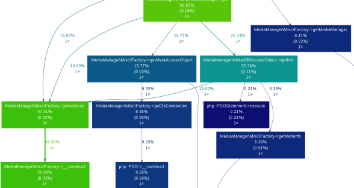

Profiling your code is an important task for finding the potential bottlenecks and optimization sources and Xdebug has been the de-facto tool for profiling PHP applications for so long. Many PHP devs have greatly used it for various needs including profiling. XHProf is another cool tool for profiling PHP applications and it is very lightweight. So, I decided to give XHProf a try also.
I am not going to talk about installation and documentation here as these are already done in a very neat manner. Please use the following links to know about installation and documentation.
Xdebug
XHProf
After installing Xdebug, you have various options to define the way you want to use it. For example, you can have following config params in your php.ini:
xdebug.profiler_enable = 0
xdebug.profiler_enable_trigger = 1
xdebug.profiler_output_name = xdebug.out.%t
xdebug.profiler_output_dir = /tmp
I will briefly explain about each config params mentioned above in brief. xdebug.profiler_enable enables the profiler for every script run if set to 1 which you probably would not want. So, we have another option like xdebug.profiler_enable_trigger which enables profiler only if XDEBUG_PROFILE is set in the request. xdebug.profiler_output_name specifies the log name format for the profiling data and xdebug.profiler_output_dir specifies the log directory. If you want to know more about these options, please visit.
If everything is set up correctly, Xdebug profiler will generate log files containing the profiling data after PHP script run but these logs are not so useful on their own. You need tools like Kcachegrind, wincachegrind etc for reading these files. There is another option like webgrind for reading these files which enables you to view the result it in your browser. You can see the similar sort of reports after analyzing the data.

After installing XHProf, you need to add xhprof_enable(); in the start of your script or the part which you want to profile and $xhprof_data = xhprof_disable(); where you want to end it. You have the profiling data in variable $xhprof_data. It would be a better idea to persist it somewhere and for that, you can add few lines after xhprof_disable so that you view it easily. XHProf has xhprof_html to view the results in your browser.
$XHPROF_ROOT = **XHProf location**;
include_once $XHPROF_ROOT . "/xhprof_lib/utils/xhprof_lib.php";
include_once $XHPROF_ROOT . "/xhprof_lib/utils/xhprof_runs.php";
$xhprof_runs = new XHProfRuns_Default();
$xhprof_runs->save_run($xhprof_data, "xhprof_testing");
Btw, I had to change a few things here and there not mentioned in documentation. So, do not mind debugging a few things if you need to.
You can then run your PHP script and open xhprof_html in your browser to view the profiling data. This report will be more and less similar to the earlier one. Now, with these reports you can see which part of your script or application is the bottleneck and handle it accordingly.
Although they look the same but XHProf has a slight advantage over Xdebug if you are looking for simple profiling data like number of calls to a function, relative time taken by each function etc.
Xdebug slows down the application by a large factor if application is doing a lot of things. XHProf on the other hand, does not have such a significant impact on processing time. I used both of them for profiling the same piece of code on the same machine. The normal page took around 7.35s, with Xdebug took around 31s and with XHProf took 12.31s to load. This might also be the reason that I had to wait longer to view Xdebug generated file through Webgrind while XHProf_html worked really well.
XHProf has also a really nice diff feature that lets you see the diff between two profiling runs to see any speed gain or loss. It might prove very helpful when you are doing the optimizations and want to know about performance gain from a particular change to the codebase.
I would say if you need just a PHP profiler, XHProf would be a good choice. XHProf might be a better profiler but Xdebug is kind of complete package as it offers a lot in terms of debugging, code coverage etc and has myriad options to suit your needs. Many IDEs, tools leverage these cool features of Xdebug for debugging, profiling and code coverage etc like PHPUnit uses Xdebug for code coverage reports, every major PHP IDE uses Xdebug for debugging and profiling. So, they can both be used side by side as useful tools in your programmer toolbox.